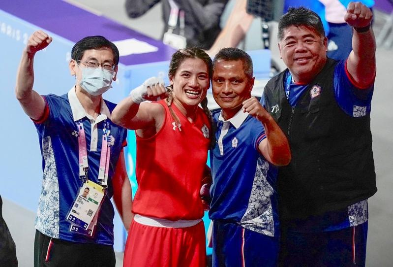

巴黎奥运已迈入后半段赛程，台湾代表团将持续力拚提升奖牌成色。已保底铜牌的「抗癌女拳王」陈念琴将在4强硬碰中国好手杨柳，全力争取压轴金牌战门票。
陈念琴在今年巴黎奥运女子拳击66公斤级项目，先后击败多米尼加、巴西与乌兹别克斯坦选手挺进4强，下一战将对上32岁、180公分的中国好手杨柳，双方在去年杭州亚运狭路相逢，当时陈念琴以2比3惜败。
今年奥运陈念琴状况调整得相当出色，前3轮几乎都压着对手打，赛后她更高喊：「我要的是金牌。」根据赛程，陈念琴的4强战将会移师法网的罗兰盖洛斯球场（Roland Garros）举行。
另外在桌球赛场上也相当精采，台湾男团庄智渊、林昀儒、高承睿联手下击败埃及后挺进8强，明天将强碰大会第4种子的日本队，预料将会陷入一番苦战。
至于女子桌球团体赛方面，台湾女团由郑怡静领军，搭配陈思羽与小将简彤娟，也将在首轮16强对上澳洲，预料应可轻松过关。
不过台湾女团签表运气不佳，若16强过关，8强确定会遇到超级大魔王中国队。
田径场上台湾代表队在林昱堂淘汰、彭名扬受伤未能完赛后，最后仅存「台湾最速男」杨俊瀚，如果预赛没能直接晋级，将在接下来复活赛多跑一轮，争取最后的晋级机会。
巴黎奥运热话题
- 麟洋配赛后大合照 李洋「1句话」逗笑马来西亚选手
- 与约克维奇打到抢7落败 阿尔卡拉斯：我有过机会
- 30岁生日礼物 中国刘洋夺金 想吃三鲜馅饺子
- 中国男子混泳接力摘金 打破美60年不败纪录
- 选手村太热没冷气 意大利金牌索性去公园睡觉